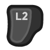

Unit Actions¶
Main Controls¶
When a Myth unit finishes with some order, it falls into a default “stance” (set of behaviors). In this stance it keeps its position if no hostile units are nearby. If it detects a hostile unit however it will attack, chasing if necessary.
If you want to put selected units into a different stance you can use the face buttons:
for Stop to halt any movement of selected units and prevent them from attacking unless and until they are attacked. Attacked units will fight back; for ranged units this can include movement to try to open up enough distance to fire back.
for Retreat to instruct selected units to run away from any nearby hostile.
for Guard/Hold is similar to Stop, with the exception that ranged units are free to open fire on any enemies they detect (but they still will not chase).
for Scatter to instruct selected units to run away from the center of their group, for a short distance. After the Scatter is complete, the units go back to the default stance.
Giving a unit some attack or move order will break its stance, and it will return to the default stance when the order is done.
Other Controls¶

to play the “taunt” animation for selected units.